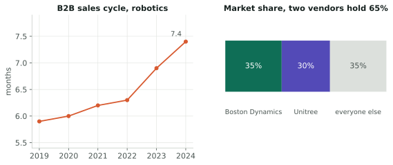

The premise was a marketplace: somewhere to compare legged robots and buy one. Before building anything we went and asked people who do this for a living — CEOs, sales leads and engineers at robotics companies — what actually goes wrong. The answers changed what we thought we were building.
What people told us

The finding that reframed the project: engineers filter on the SDK first. Before payload, before battery life, before price. If the software stack is closed, or the ROS support is partial, or the documentation is thin, the robot is off the list regardless of what the hardware can do — because a robot you cannot program is a robot you cannot deploy.
That sounds obvious written down. It is not how the market presents itself. Vendor pages lead with degrees of freedom, payload and run time. The thing that decides the purchase is buried in a developer portal, if it is published at all. Buyers were asking for things nobody sells: open leaderboards, side-by-side evaluations, honest documentation of payload power and I/O.
The commercial friction was ordinary by comparison and no less real. Landed cost stays unknown until late because duties and fees arrive at the end. Some regions restrict imports altogether. Components ship incomplete and have to be sourced separately, which adds weeks.
Why the friction persists

Two structural facts explain a lot of it. The B2B sales cycle in robotics has been lengthening — past seven months, with roughly two thirds of buyers saying it is too long. And two vendors hold about 65% of the market, so the incumbents have no particular reason to make comparison easier.
Meanwhile companies that raised well still did not make it: Jibo, Kuri and Rethink Robotics all closed in 2018, and Starship took ten years and $218 million of funding to reach $20 million of revenue. Getting from a working pilot to a business is the hard part of this industry, not getting the robot to walk.
What I took from it
I am an engineer, and my instinct at the start was to compare specifications — to build the thing that lines robots up by torque and reach. Six weeks of interviews said the specification sheet is not where the decision happens.
The part I would carry into any hardware role is narrower and more useful than the venture itself: if you sell a machine that other people have to program, the SDK and its documentation are not a deliverable that comes after the product. They are part of it — and by the account of the people buying, often the part that decides.